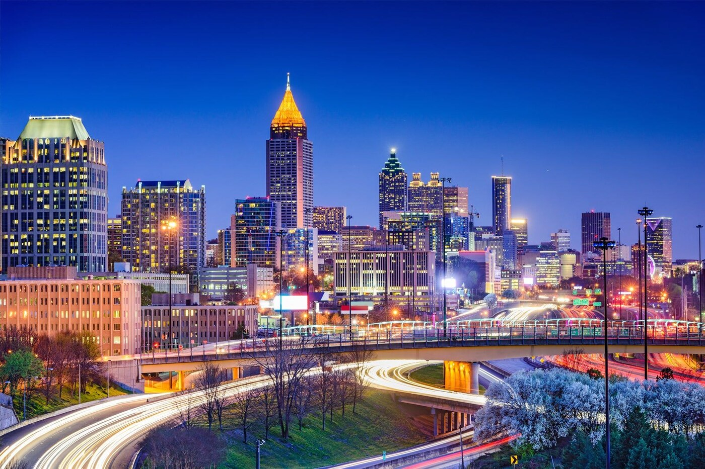

Atlanta skyline at nightI chose Atlanta for my website because I currently go to school here. It is a busy city, but it also has plenty of places to relax, eat, and hang out with friends.
What I like about Atlanta is that every area feels a little different. Downtown has tall buildings and tourist attractions, while Midtown has parks, restaurants, and places where you can walk around.
Atlanta also has a lot of history. It was an important city during the Civil Rights Movement, and there are museums and historic places where visitors can learn more about it.
Why Visit Atlanta?
- Important museums and historic sites
- Beautiful parks and outdoor spaces
- A wide variety of restaurants
- Popular sports and entertainment events
Quick Attraction Guide
| Attraction | Area | Best For |
|---|---|---|
| Georgia Aquarium | Downtown | Marine life |
| Piedmont Park | Midtown | Outdoor activities |
| Atlanta Botanical Garden | Midtown | Plants and nature |